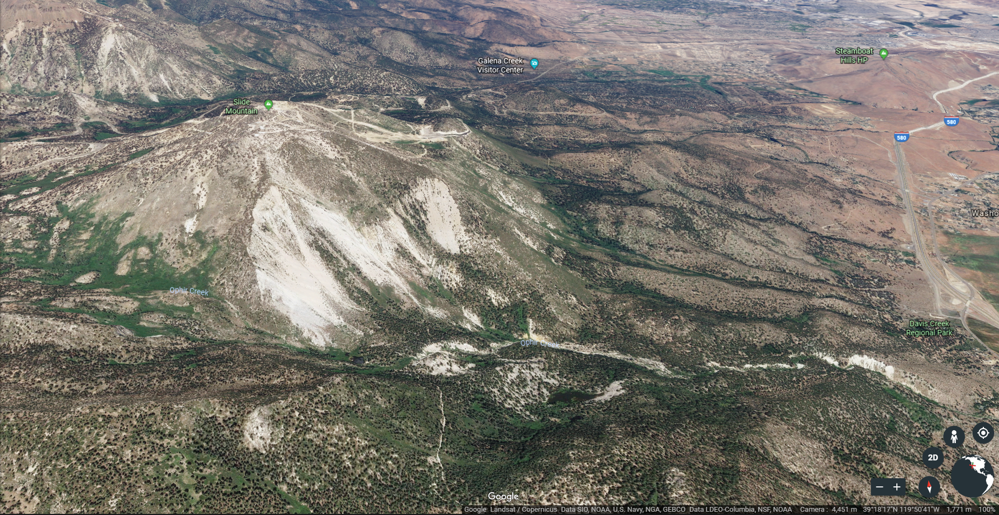
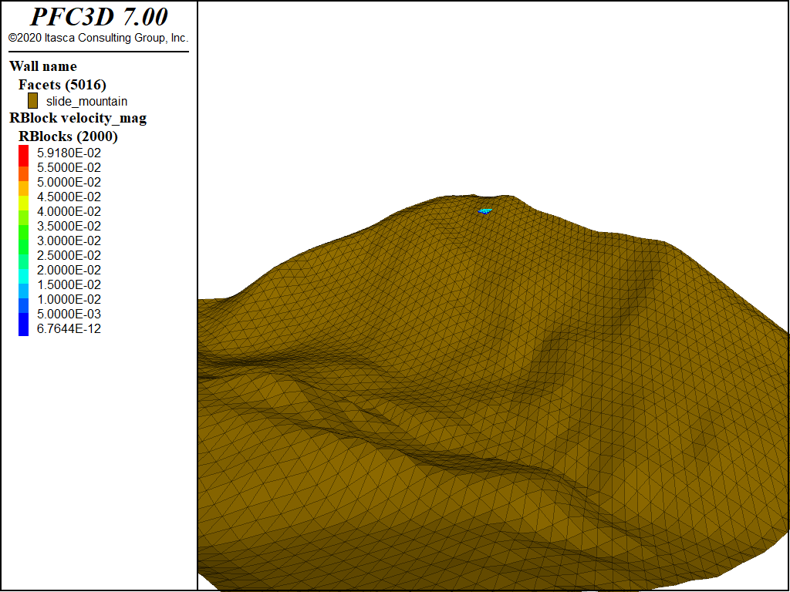
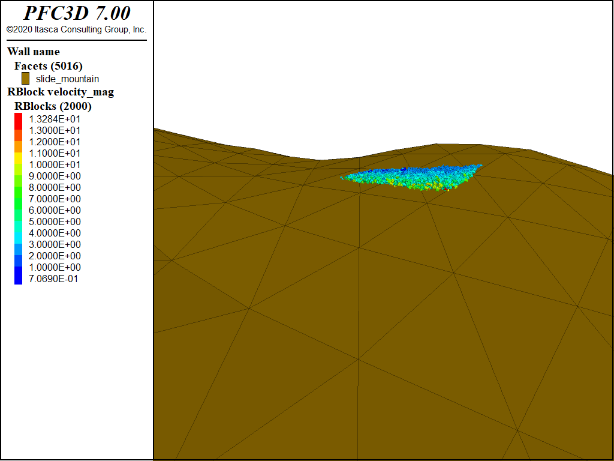
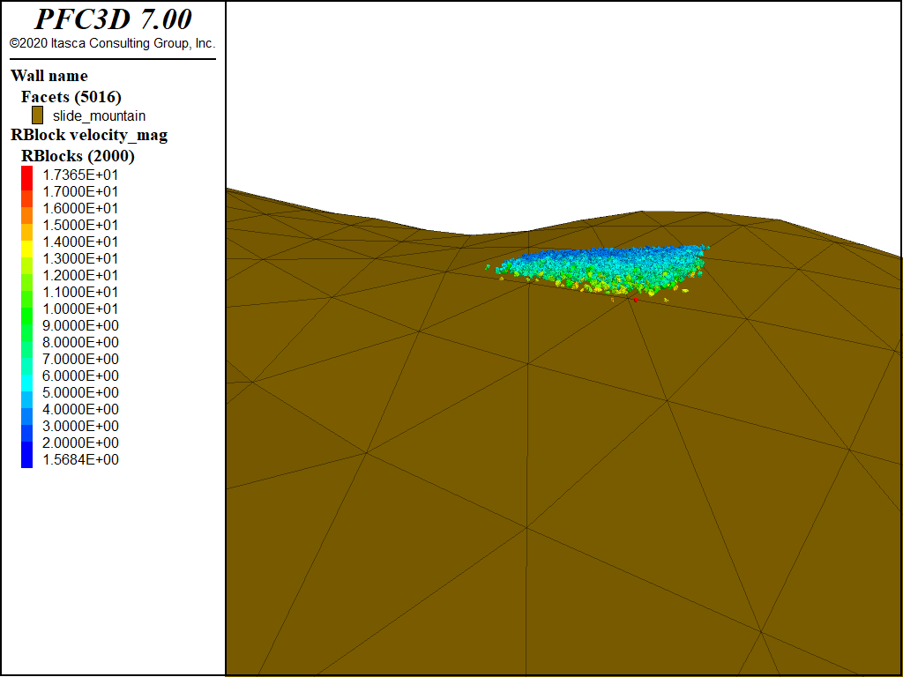
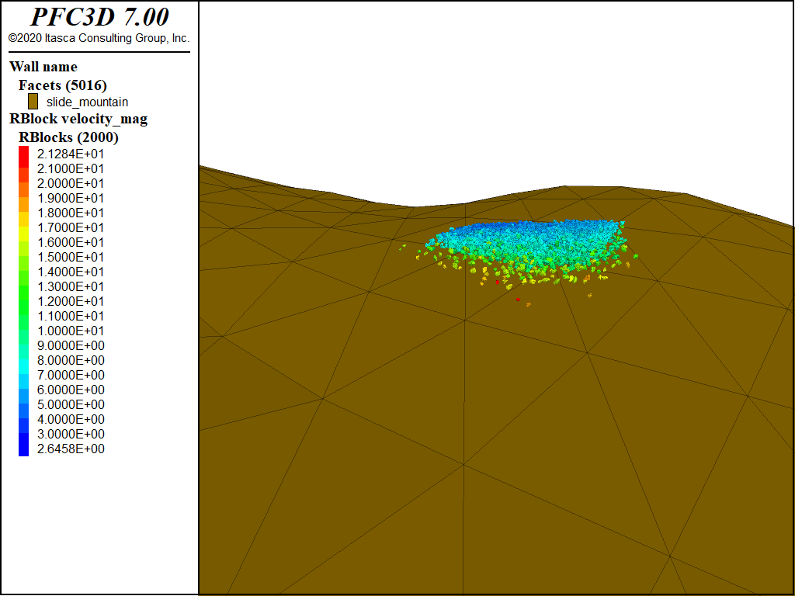
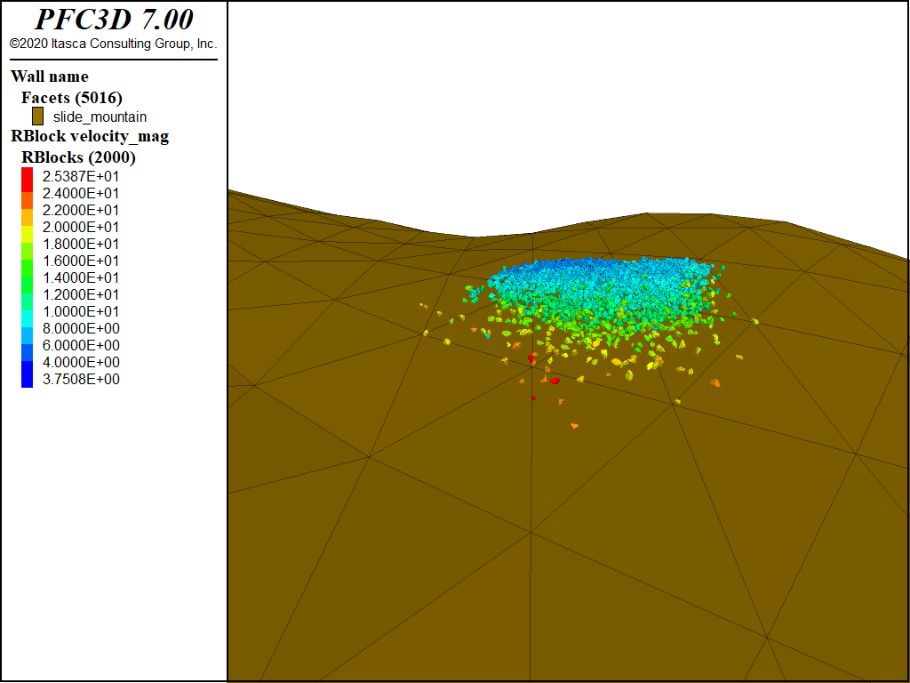
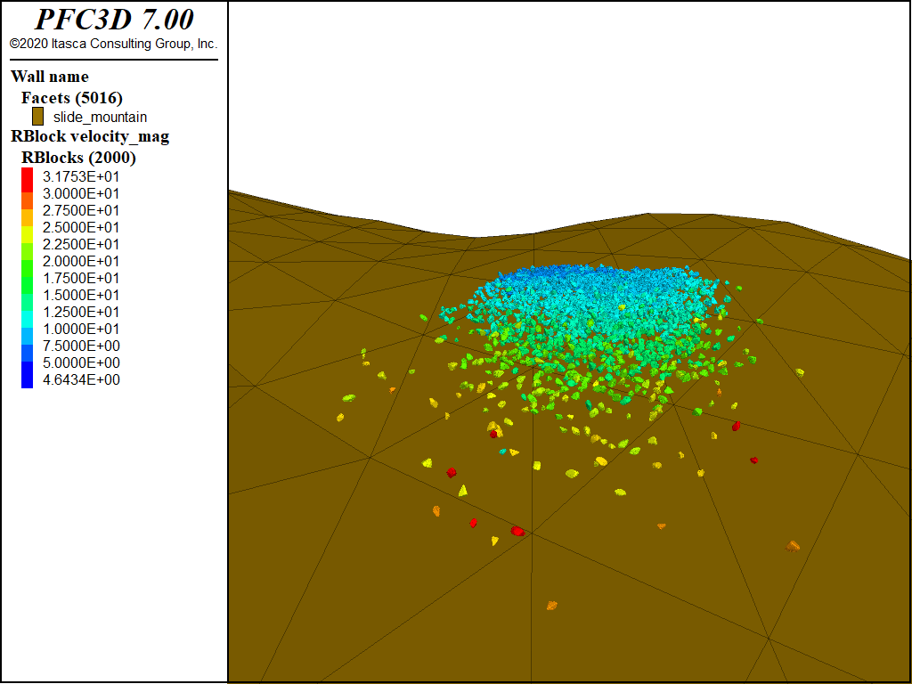
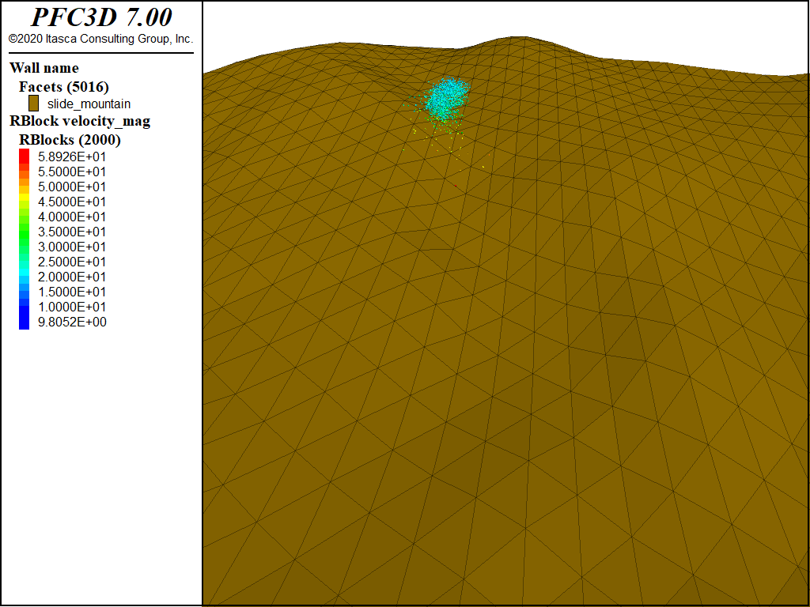
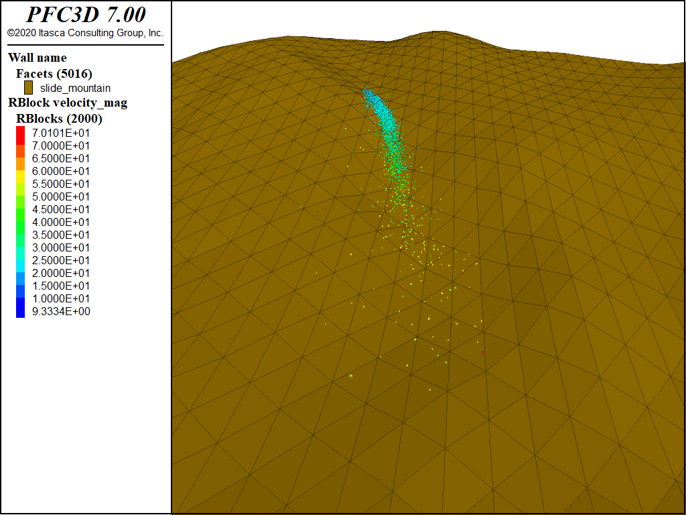

滑坡的刚性块体模型
| 算例资源 | |
|---|---|
| 数据文件（Data Files） | 项目： 打开“RockSlide.prj”[1]（在 PFC3D 中） |
问题描述
本算例应用使用刚性块体来模拟内华达州里诺市（Reno）以南 Slide Mountain 山坡上的一次岩崩。这些刚性块体位于 1983 年阵亡将士纪念日（Memorial Day）发生灾难性破坏的斜坡附近。下图给出了分析所用山坡的航拍影像，以及 1983 年发生破坏的区域。从航拍影像中可以清楚地看到滑坡路径。在 1983 年的这次事件中，物质流至 Washoe Valley 谷底，损毁了住宅房屋，并覆盖了 U.S. Route 395 公路的一部分。本分析重点关注连接 Mt. Rose Meadows 与 Washoe Valley 的 Ophir Creek 汇水区。


图 1：Slide Mountain 的 Google Earth 影像，显示了破坏区域及通往 Washoe Valley 的流动路径。
该坡向的地形模型如下所示。刚性块体放置在 Ophir Creek 汇水区以上约 700 垂直米处。汇水区对侧的地形升高，形成了将物质汇聚的有效边界。刚性块体的最大长度约为 1-2 米，与 Washoe Valley 中静止的最大物质尺寸相一致。


图 2：Slide Mountain 在 Ophir Creek 汇水区以上的数字高程模型。
首先由数字化岩石的 stl 文件创建 6 个刚性块体模板。下图给出了各模板的形状。请注意，为加快计算引入了圆化处理；下排带有圆化，上排显示的是核心形状。圆化距离按体积等效球半径的百分比计算。

利用这些模板，通过 rblock generate 命令生成 2000 个互不重叠的刚性块体。采用时步缩放和局部阻尼，使这些刚性块体在一个包围盒内于斜坡上就位。随后移除该容纳盒，并修改阻尼和摩擦，使块体能够沿斜坡下滑。以下各图给出了模拟时间 2、4、6、8 和 10 s 时的刚性块体速度。刚性块体离开源区后会迅速加速并沿斜坡横向扩散。由于地形存在摩擦坡降，整组块体沿下坡方向加速。


图 4：2 s 后的刚性块体速度。


图 5：4 s 后的刚性块体速度。


图 6：6 s 后的刚性块体速度。


图 7：8 s 后的刚性块体速度。


图 8：10 s 后的刚性块体速度。
下图给出了模拟时间 20 s 和 30 s 时的刚性块体速度。请注意，局部地形会迅速捕获流动，并将其汇聚引导至 Ophir Creek 排水道。接近 70 m/s 的最大流速与大尺度岩体滑坡中观测到的数值一致。


图 9：20 s 时的刚性块体速度。


图 10：30 s 时的刚性块体速度。
尾注
| [1] | 这些文件位于 PFC3D 的算例对话框（菜单中的）下的“examples/rockslide”文件夹中。如果没有出现此条目，请将应用程序数据复制到一个新目录。（可使用菜单命令 。详细信息请参阅“复制应用程序数据（Copy Application Data）”一节。） |
| 这些内容对您有帮助吗？… 版权与免责声明 | FLAC3D © 2019, Itasca | 原文更新于 2020 年 10 月 8 日 |